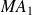
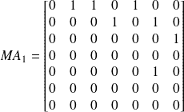
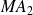
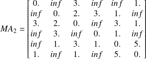
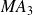
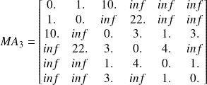
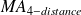
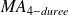
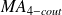
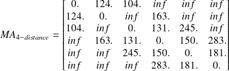

Matrice d'adjacence d'un graphe
Graphes simples
Trois graphes différents sont proposés ici, et il faut à chaque fois préciser ses caractéristique et déterminer la matrice d'adjacence correspondante.
En parallèle, nous allons mémoriser ces graphes sous la forme d'une liste contenant une liste avec les noms des sommets et la matrice d'adjacence sous la forme d'un array numpy.
Ces graphes seront dans un fichier graphes_exemples.py qui nous sera utile par la suite pour tester nos futures fonctions sur les graphes.
Question
Préciser les caractéristiques de ce graphe, puis déterminer la matrice d'adjacence notée  .
Ajouter G_1 dans le fichier graphes_exemples.py.
Penser importer le module numpy dans votre module.
Il s'agit d'un graphe orienté non pondéré.

# Importation des modulesimport numpy as np
G_1 = [['A', 'B', 'C', 'D', 'E', 'F', 'G'], \
np.array([[0, 1, 1, 0, 1, 0, 0],\
[0, 0, 0, 1, 0, 1, 0],\
[0, 0, 0, 0, 0, 0, 1],\
[0, 0, 0, 0, 0, 0, 0],\
[0, 0, 0, 0, 0, 1, 0],\
[0, 0, 0, 0, 0, 0, 0],\
[0, 0, 0, 0, 0, 0, 0]])]
Question
Préciser les caractéristiques de ce graphe, puis déterminer la matrice d'adjacence notée  .
Ajouter G_2 dans le fichier graphes_exemples.py.
Si deux sommets ne sont pas reliés par une arête, il suffit d'indiquer une pondération infinie dans la matrice.
On peut alors importer spécifiquement inf du module numpy.
Il s'agit d'un graphe non orienté et pondéré.

from numpy import inf
G_2 = [['A', 'B', 'C', 'D', 'E', 'F'], \
np.array([[ 0., inf, 3., inf, inf, 1.],\
[ inf, 0., 2., 3., 1., inf],\
[ 3., 2., 0., inf, 3., 1.],\
[ inf, 3., inf, 0., 1., inf],\
[ inf, 1., 3., 1., 0., 5.],\
[ 1., inf, 1., inf, 5., 0.]])]
Question

Préciser les caractéristiques de ce graphe, puis déterminer la matrice d'adjacence notée  .
Ajouter G_3 dans le fichier graphes_exemples.py.
Il s'agit d'un graphe non orienté et pondéré.

G_3 = [['Routeur 1', 'Routeur 2', 'Routeur 3', 'Routeur 4', 'Routeur 5',\
'Routeur 6'], \
np.array([[ 0., 1., 10., inf, inf, inf],\
[ 1., 0., inf, 22., inf, inf],\
[ 10., inf, 0., 3., 1., 3.],\
[ inf, 22., 3., 0., 4., inf],\
[ inf, inf, 1., 4., 0., 1.],\
[ inf, inf, 3., inf, 1., 0.]])]
Multigraphe
Source pour les distances, durées et coûts : ViaMichelin.
Ce dernier exemple est un multigraphe puisque chacune de ses arêtes possède trois pondérations distinctes.
Question
Déterminer les matrices d'adjacence notées  ,  ,  .
Ajouter G_4_distance, G_4_duree et G_4_cout dans le fichier graphes_exemples.py.

Pour les deux autres matrices, il suffit de remplacer les pondérations correspondantes.
G_4_distance = [['Parme', 'La Spezia', 'Bologne', 'Florence', 'Pérouse', \
'Rome'], \
np.array([[ 0., 124., 104., inf, inf, inf],\
[ 124., 0., inf, 163., inf, inf],\
[ 104., inf, 0., 131., 245., inf],\
[ inf, 163., 131., 0., 150., 283.],\
[ inf, inf, 245., 150., 0., 181.],\
[ inf, inf, inf, 283., 181., 0.]])]
G_4_duree = [['Parme', 'La Spezia', 'Bologne', 'Florence', 'Pérouse', \
'Rome'], \
np.array([[ 0., 83., 71., inf, inf, inf],\
[ 83., 0., inf, 106., inf, inf],\
[ 71., inf, 0., 99., 174., inf],\
[ inf, 106., 99., 0., 103., 168.],\
[ inf, inf, 174., 103., 0., 127.],\
[ inf, inf, inf, 168., 127., 0.]])]
G_4_cout = [['Parme', 'La Spezia', 'Bologne', 'Florence', 'Pérouse', \
'Rome'], \
np.array([[ 0., 25., 16., inf, inf, inf],\
[ 25., 0., inf, 43., inf, inf],\
[ 16., inf, 0., 22., 30., inf],\
[ inf, 43., 22., 0., 20., 42.],\
[ inf, inf, 30., 20., 0., 22.],\
[ inf, inf, inf, 42., 22., 0.]])]
Nous aurions pu entrer MG_4 avec la liste des sommets, la liste des pondérations et la matrice d'adjacence dont chaque élément serait la liste des trois pondérations de l'arête considérée.
Il faudrait alors faire une fonction qui permette à partir du multigraphe MG_4 renvoyer les trois graphes G_4 correspondant aux trois pondérations existantes.
Personnellement, j'ai utilisé une fonction d'interface creation_graphe() pour créer tous les graphes ci-dessus de manière plus conviviale.
def creation_graphe():
'''renvoie la liste des noms des sommets et la matrice d'adjacence de typearray de numpy.'''n = int(input('Nombre de sommets : '))
NS = [] # Liste des noms des sommets
print('Liste des noms des sommets')
for i in range(n) :
NS.append(input('Nom du sommet ' + str(i) + ' : '))
print('Liste des noms des sommets\n', NS)
# On peut améliorer ce programme en proposant les multigraphes pour # gérer l'exemple 4print('Matrice d\'adjacence')
sym = bool(int(input('''La matrice est-elle orientée ?
(oui = 0, non = 1)'''))) # sym sera True si la matrice est symétriquepond = not bool(int(input('''La matrice est-elle pondérée ?
(oui = 0, non = 1)'''))) # si pond est True, la matrice sera composée de flottants et d'inf, # et des entiers 0 et 1 sinonif pond :
MA = np.zeros( (n, n), float)
print('Quand deux sommets ne sont pas liés, entrer inf')
else :MA = np.zeros( (n, n), int)
print('Quand deux sommets ne sont pas liés, entrer 0')
for si in range(n) :
for sj in range(si + 1, n):
if sym and pond :
MA [si, sj] = float(input('MA[' + NS[si] + ',' + NS[sj] + '] = '))
MA [sj, si] = MA [si, sj]
if sym and not pond :
MA [si, sj] = int(input('MA[' + NS[si] + ',' + NS[sj] + '] = '))
MA [sj, si] = MA [si, sj]
if not sym and pond :
MA [si, sj] = float(input('MA[' + NS[si] + ',' + NS[sj] + '] = '))
MA [sj, si] = float(input('MA[' + NS[sj] + ',' + NS[si] + '] = '))
if not sym and not pond :
MA [si, sj] = int(input('MA[' + NS[si] + ',' + NS[sj] + '] = '))
MA [sj, si] = int(input('MA[' + NS[sj] + ',' + NS[si] + '] = '))
print('Matrice d\'adjacence\n', MA)
return([NS, MA])